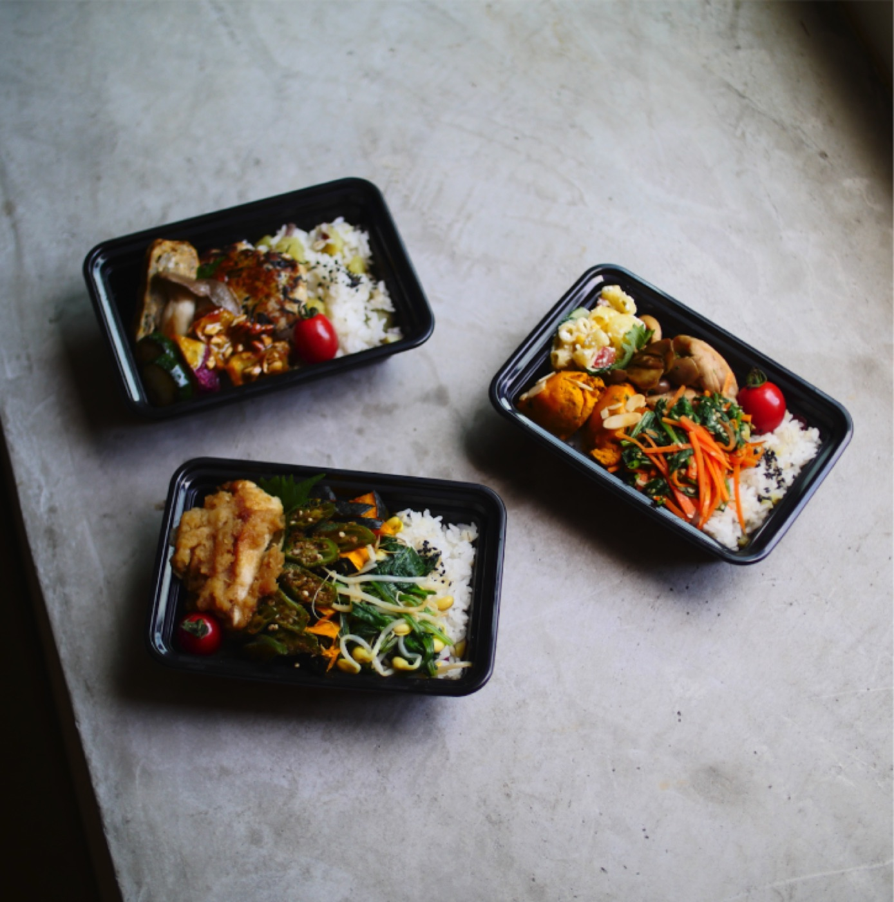
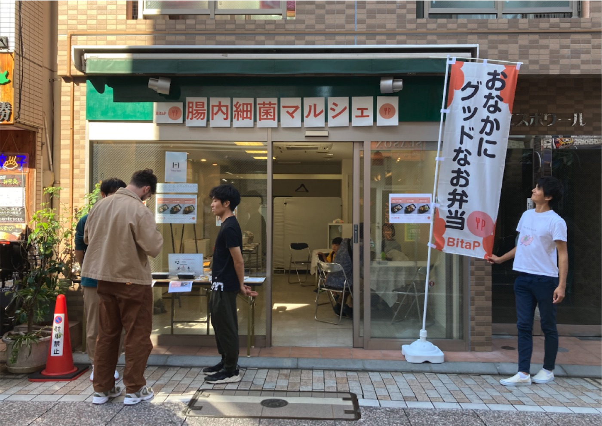
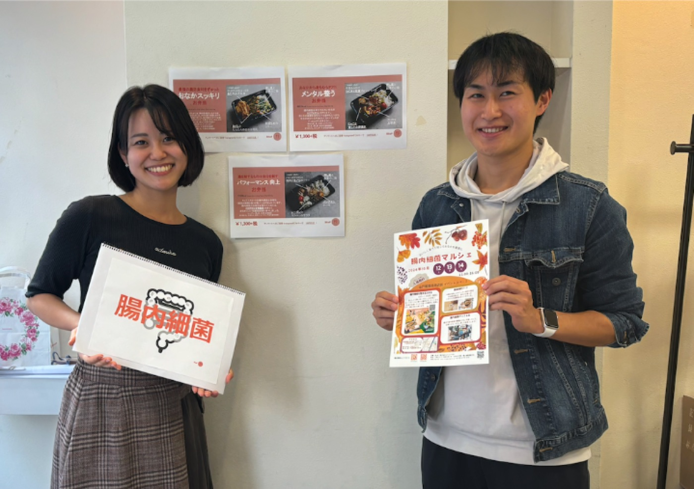
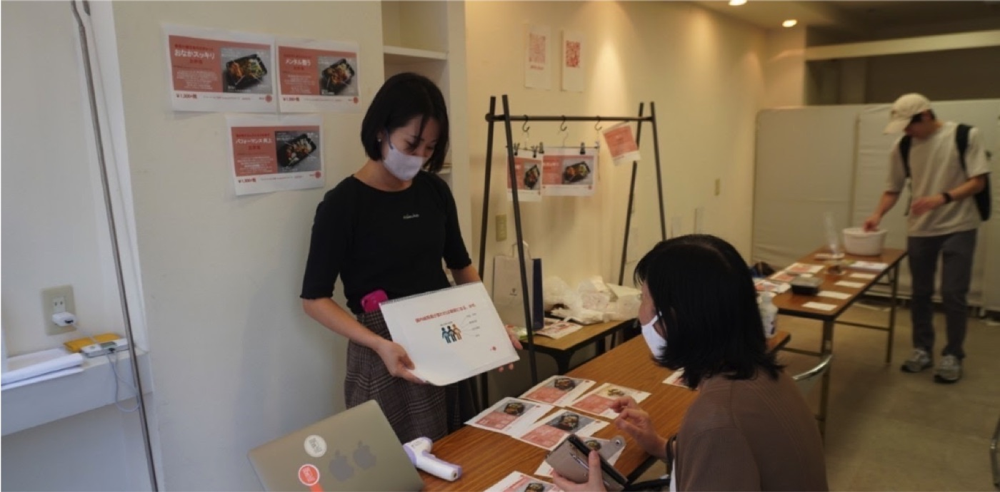

2024/10/12-10/14
腸内細菌マルシェを開催しました
「腸内細菌マルシェ」開催
2024年10月12日（土）から14日（月）に、戸越銀座商店街にて3種類のBitaPオリジナルお弁当の販売イベントを開催しました。
3日間で合計で120名以上の方にご来場いただき、全日完売で終わることができました。
当日は腸内細菌と食の関係性のショートトークをご提供したほか、「腸内細菌を調べて自分にピッタリのご飯が食べられる未来」を体験するデモを行いました。
次回、一層パワーアップしたイベントを開けるよう努めてまいります！ご来場いただいた皆様、ありがとうございました。



